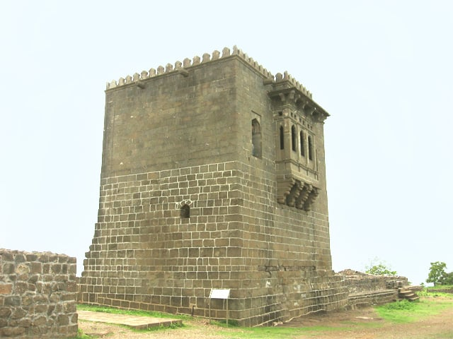

Shivneri Fort is a historic hill fortress located near Junnar in Pune district, Maharashtra, India..
Shivneri Fort holds significant historical importance as it is the birthplace of Shivaji Maharaj, the founder of the Maratha Empire in India. Shivaji Maharaj was born at the fort in 1630.
Shivneri Fort holds significant historical importance as it is the birthplace of Shivaji Maharaj, the founder of the Maratha Empire in India. Shivaji Maharaj was born at the fort in 1630. The fort is situated on a triangular hill with steep cliffs on three sides, making it naturally fortified. It features a series of gates, bastions, and walls constructed using stone and mud. Positioned strategically atop a hill, Shivneri Fort provided a vantage point for surveillance and defense against invaders. Its location allowed for effective control over the surrounding region. Shivneri Fort attracts tourists and history enthusiasts from around the world. Visitors can explore various structures within the fort, including the Kadelot, Badami Talav (lake), and the entrance gate with intricate carvings. Overall, Shivneri Fort is not only a historic landmark but also a cherished symbol of Maharashtra's cultural heritage, attracting visitors with its rich history and scenic beauty.